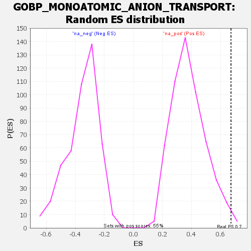

Profile of the Running ES Score & Positions of GeneSet Members on the Rank Ordered List
| Dataset | rank |
| Phenotype | NoPhenotypeAvailable |
| Upregulated in class | na_pos |
| GeneSet | GOBP_MONOATOMIC_ANION_TRANSPORT |
| Enrichment Score (ES) | 0.67243975 |
| Normalized Enrichment Score (NES) | 1.7558779 |
| Nominal p-value | 0.010968922 |
| FDR q-value | 0.7318759 |
| FWER p-Value | 0.968 |
| SYMBOL | RANK IN GENE LIST | RANK METRIC SCORE | RUNNING ES | CORE ENRICHMENT | |
|---|---|---|---|---|---|
| 1 | ANO10 | 16 | 114.505 | 0.2957 | Yes |
| 2 | SLC26A6 | 91 | 51.009 | 0.3973 | Yes |
| 3 | APOL1 | 141 | 41.045 | 0.4837 | Yes |
| 4 | GOPC | 253 | 30.216 | 0.5136 | Yes |
| 5 | CLIC4 | 327 | 25.650 | 0.5486 | Yes |
| 6 | LRRC8E | 382 | 22.104 | 0.5827 | Yes |
| 7 | CLIC3 | 433 | 20.268 | 0.6138 | Yes |
| 8 | KCNQ1 | 498 | 18.126 | 0.6329 | Yes |
| 9 | ANO9 | 514 | 17.497 | 0.6724 | Yes |
| 10 | ANO8 | 864 | 9.821 | 0.5411 | No |
| 11 | GABRB3 | 1301 | 4.626 | 0.3569 | No |
| 12 | GABRD | 1334 | 4.278 | 0.3538 | No |
| 13 | SLC17A7 | 1377 | 3.995 | 0.3454 | No |
| 14 | BEST3 | 1530 | -6.180 | 0.2933 | No |
| 15 | SLC4A5 | 1639 | -8.728 | 0.2677 | No |
